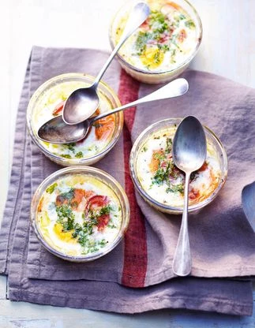

Pasta gremolata met ricotta

Ingredienten
- 6 eetlepels tomatencoulis
- 6 eieren
- 1 tomaat
- boter
- versgemalen peper
- 1bosje kervel
Bereiding
- Verwarm 1l water. Zet de oven aan op 7/210° en beboter 6 vormpjes.
- Doe de tomatencoulis op de bodem van de schaaltjes, breek de eieren erboven, zout, peper, voeg 1 plakje tomaat en gehakte kervel toe.
- Zet de schaaltjes in een ovenschaal, giet er heet water omheen en laat ze au bain-marie 12 tot 15 minuten garen, afhankelijk van je oven. Serveer onmiddellijk.